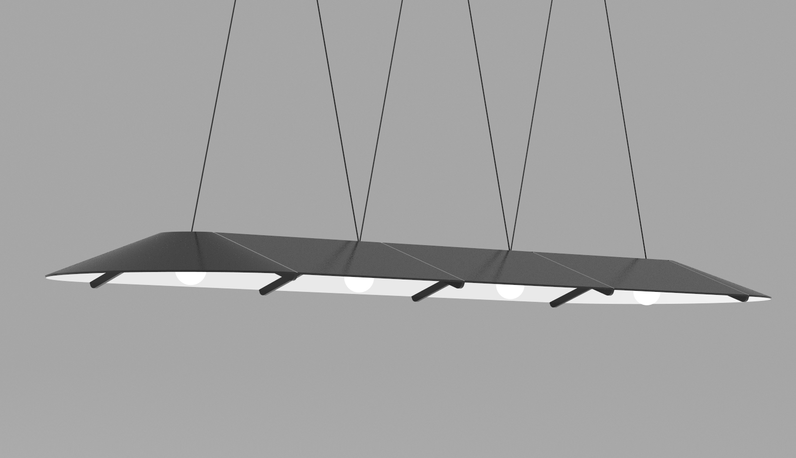
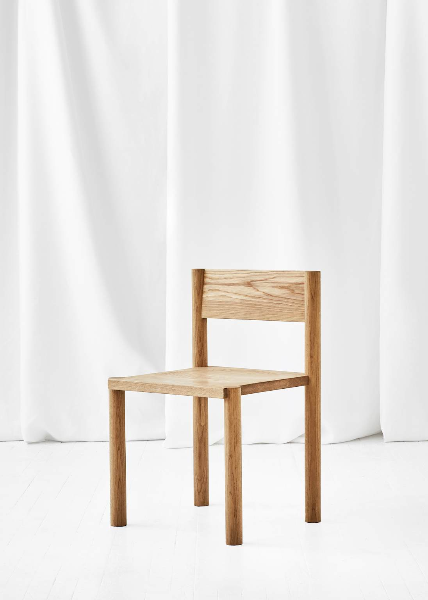

Sweetgreen FF&E
The bulk of my work as a Junior Designer at ASH NYC revolved around designing and developing an in-brand suite of furniture and architectural components for Sweetgreen stores nationwide, which ultimately became one concept store in Chicago at Fulton Market.
Working with only one other designer at ASH, my role included concept sketching, 3D modeling in Solidworks and extensive renderings of CMF options in Keyshot, as well as production drawings that were distributed to various fabricators to get production estimates.
With the initial intent being to produce hundreds of each piece, as well as being aligned with Sweetgreen's brand, the collection was to be economical while still feeling comfortable and welcoming. This resulted in surfaces being treated in wood or stone, with their structures often utilizing powder-coated steel.
Completed Sweetgreen store located in Chicago at Fulton Market.
See process and research ↗

Exstensive renderings were created to develop each object and to share with the account.
PR Firm Office FF&E
I worked with Nick Ozemba to design the communal desks and other sourced furniture arrangements for a PR firm in Midtown Manhattan. Nick worked to arrange the space, I developed the FF&E within those guidelines.
Completed office in midtown. Photo courtesy of the companies website.
Large table with integrated desk lamps. 5 of these "units" were built for the office. This format of rendering was often used to communicate the "unit" to be duplicated.

Small modifications were made to an existing ASH chair to improve its ergonomics while maintaing it's overall simple silhouette. A small dish in the seat and a 3 degree cut to the backrest.
Freelance / consulting work for The Coast, 2017
I worked with Paul Chan of The Coast to develop a few renderings showcasing his Either/Or light, which were used as submissions for 2018 NYC X Design. The Either/Or light went on to win the 2018 NYC X DESIGN "Made in the Boroughs" Award.
Either/Or light shown a variety of fictional sets and materials.
Close